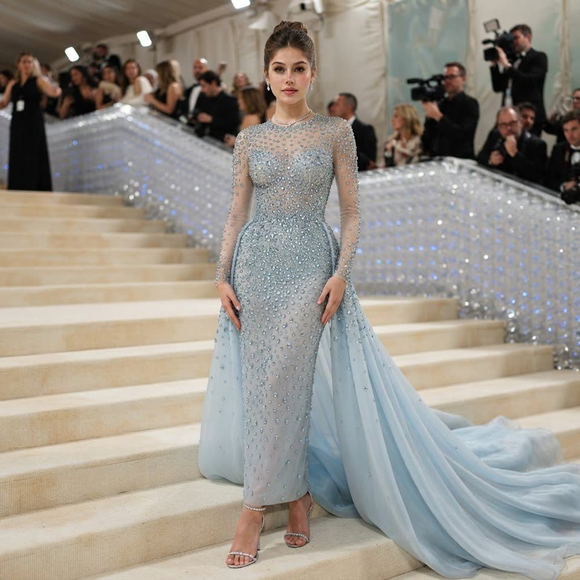

Red Carpet Fashion Photo Prompt
WRD-008WardrobeNano Banana Proby ElvoryaOctober 8,

A detailed prompt for creating an ultra-realistic red-carpet fashion photograph of a woman in an icy silver-blue gown, preserving facial identity from a reference image.
Prompt
Use the uploaded image as the primary visual reference. Create an ultra-realistic, high-end red-carpet fashion photograph of the same woman, preserving her exact facial identity, facial structure, eyes, eyebrows, nose, lips, jawline, skin tone, hairstyle, and natural proportions with maximum accuracy. No identity drift or facial alteration. Dress her in an exquisite icy silver-blue couture evening gown made from sheer translucent fabric, densely decorated with hundreds of individually visible crystal and rhinestone embellishments. The gown has a fitted long-sleeve illusion bodice, elegant high neckline, sculpted waist, and a sleek floor-length silhouette. Add a dramatic flowing light-blue sheer train cascading naturally down the stairs behind her. Crystal-studded silver open-toe heels, delicate diamond earrings, and a refined diamond necklace. Place her standing gracefully on the grand cream-colored staircase of a prestigious fashion gala, facing the camera with a confident yet elegant expression. Behind her, a glamorous crowd of photographers and guests are taking photographs, with professional cameras and flashes visible. The staircase and surrounding railings are covered with sparkling crystal-like decorations. Composition: full-body portrait, head-to-toe visible, centered subject, elegant natural standing pose, train fully visible, realistic body proportions. Photography: luxury fashion editorial photography, cinematic depth of field, realistic flash photography, soft ambient lighting, subtle reflections from crystals, natural skin pores and texture, highly detailed fabric, physically accurate rhinestones, realistic hands and fingers, premium Vogue-style aesthetic, photorealistic, 8K detail. Negative prompt: cartoon, CGI, 3D render, plastic skin, excessive beauty retouching, altered face, different person, identity drift, distorted anatomy, extra fingers, malformed hands, blurry face, oversized jewelry, unrealistic crystals, artificial-looking fabric, duplicate people, text, logo, watermark.
Tags: 35mm film, fashion, portrait